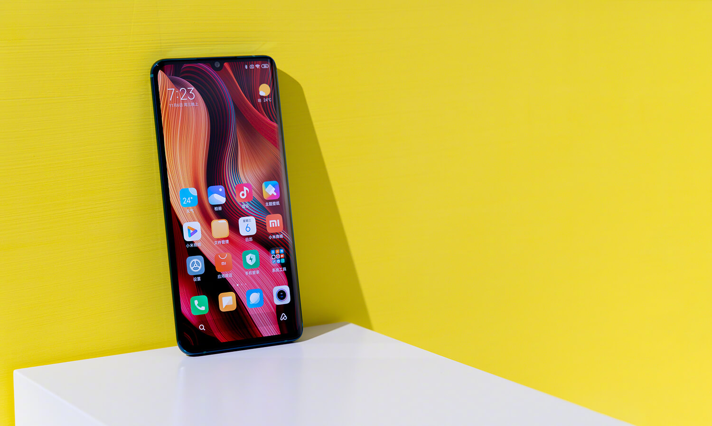
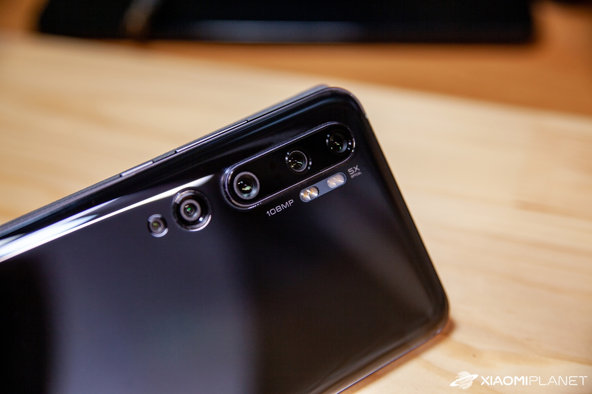
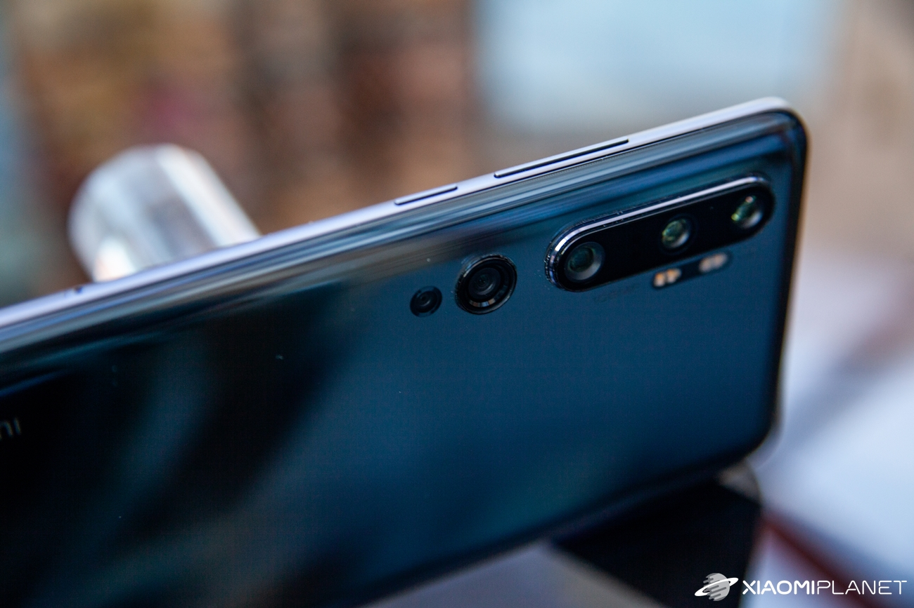

Smartfón prichádza v elegantnej čiernej krabičke, ktorá obsahuje obrázok s názvom modelu. Na vrchu sa nachádza tentokrát čierna papierová obálka, ktorá obsahuje (podobne ako pri Mi 9T) kvalitné plastové púzdro s potrebnými výrezmi pre smartfón.
Pod spomínanou obálkou sa nachádza samotný sklo-kovový smartfón prelepený ochrannou fóliou. Pod ním sa nachádza ešte kábel na nabíjanie s koncovkou USB typu C a lokálna koncovka nabíjačky.
Xiaomi Mi Note 10 prichádza v čiernej krabičke s veľkým nápisom 10, ktorý je súčasťou jeho názvu. V balení nájdeme okrem smartfónu aj solídny ochranný kryt. V prípade našej čiernej verzie mobilu ide o čierny gumený kryt.
Hneď ako po vybalení uchopíš Xiaomi Mi Note 10 do ruky, pocítiš, že nejde o žiadny lacný smartfón. Jeho konštrukcia je spracovaná špičkovo a tvorí ju prevažne sklo. To je na zadnej strane, z prednej strany ide o 3D zahnutý displej. Všetko pokope drží kvalitný kovový rám s matnou povrchovou úpravou a zrezranými hranami. Dizajnovo ide o veľmi podobný smartfón konkurenčnému Huawei P30 Pro, takže Xiaomi sa znova inšpirovalo, no tentokrát u svojho čínskeho konkurenta.
Vo výbave smartfónu sa nachádza hneď pätica zadných fotoaparátov, čo je v danej cenovej kategórii rozhodne neštandardné. Práve fotoaparát je najväčším lákadlom tohto smartfónu.
Všetko štartuje 25 mm hlavný 108 MPx (f/1.7) snímač, ktorý zabezpečí naozaj detailné fotografie s nádhernou a hlavne prirodzenou hĺbkou ostrosti.
Drvivá väčšina používateľov napriek tomu využije skôr automatický režim, ktorý produkuje 16 MPx fotografie z hlavného snímaču prostredníctvom známej technológie skladania pixelov.
Náročnému používateľovi bude rozhodne chýbať výkon navyše, to je fakt. Avšak tento smartfón má hlavné výhody niekde inde.
Ide o špičkovú fotografickú výbavu, krásny AMOLED displej a naozaj veľká kapacita batérie. Na druhej strane absentuje podpora IP certifikácie pre zvýšenú odolnosť a tiež bezdrôtové nabíjanie.
